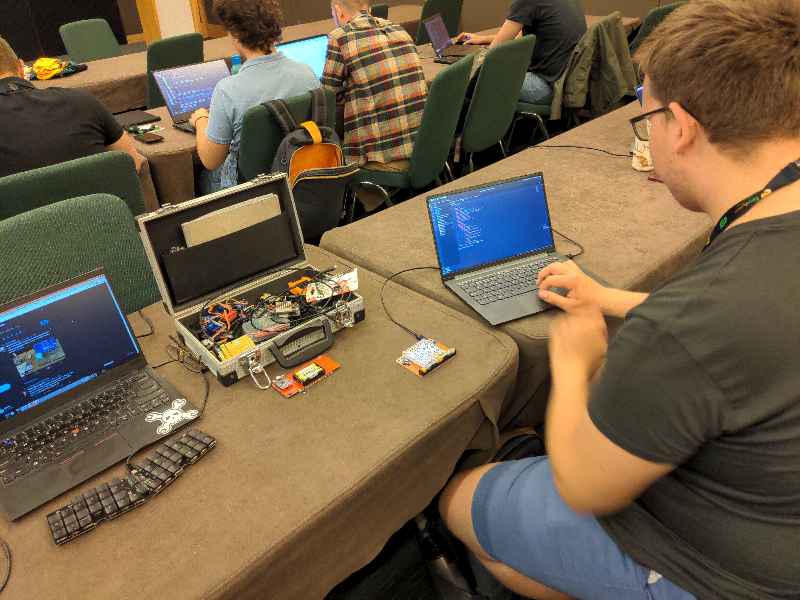

EuroPython 2022¶
Published on 2022-07-19 in PewPew LCD.
Last week I was in Dublin at the EuroPython conference, and we did a number of PewPew-related activities. There was a whole-day workshop with the PewPew Standalone devices we had left over from 2019 — I think it mostly went well, except for some Mac users who only had USB-C ports on their computers, and no adapters. I think I will need to get some adapters or C-to- micro cables for the future workshops.
A few more people played with the PewPews through the conference at the “maker fest” tables, and I also showed off the new PewPew LCD, which seems to be very well received. Then I gave a talk about making games with CircuitPython in general, and about all those handheld game consoles running CircuitPython — the talk wasn’t very popular, but I hope that I got the people who came to see it interested in this.
Finally, after the conference, during the sprints, we worked on some more PewPew games, and I also showed a few people how to contribute to CircuitPython itself. It was great fun.
At the end of the conference, the organizers decided to give out all the left-over PewPew devices, so we will have a couple hundred more users afterwards! Huge thanks to the EuroPython organizers for making it all possible!
